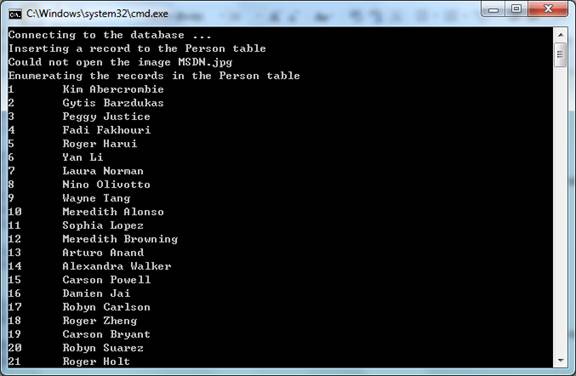

C++ app uses ADO to access database (CppUseADO)
CONSOLE APPLICATION (CppUseADO)
Introduction
The CppUseADO sample demonstrates the Microsoft ActiveX Data Objects (ADO) technology to access databases using #import and Visual C++. It shows the basic structure of connecting to a data source, issuing SQL commands, using the Recordset object and performing the cleanup.
Compiling the sample
1. First you need to append data file
You just append the *.MDF to your database server.
2. There are two methods to connect to the database
�� Use Integrated security to connect the database
You needn��t to config username and password in your database server. Just comment code like this:
// Define the connection string. (The data source is created in the
// sample SQLServer2005DB)
// Method 1: Use Integrated security to connect the database.
_bstr_t bstrConn("Provider=SQLOLEDB.1;Integrated Security=SSPI;Data Source=localhost\\SQLEXPRESS;Initial Catalog=SQLServer2005DB;");
// Open the connection
hr = spConn.CreateInstance(__uuidof(ADODB::Connection));
hr = spConn->Open(bstrConn, "","", NULL);
//// Method 2: Don't use Integrated security connect the database.
//_bstr_t bstrUserID("HelloWorld");
//_bstr_t bstrPassword("111111");
//_bstr_t bstrConn("Provider=SQLOLEDB.1;Data Source=localhost\\SQLEXPRESS;Initial Catalog=SQLServer2005DB;");
//// Open the connection
//hr = spConn.CreateInstance(__uuidof(ADODB::Connection));
//hr = spConn->Open(bstrConn, bstrUserID, bstrPassword, NULL);
// Define the connection string. (The data source is created in the
// sample SQLServer2005DB)
// Method 1: Use Integrated security to connect the database.
_bstr_t bstrConn("Provider=SQLOLEDB.1;Integrated Security=SSPI;Data Source=localhost\\SQLEXPRESS;Initial Catalog=SQLServer2005DB;");
// Open the connection
hr = spConn.CreateInstance(__uuidof(ADODB::Connection));
hr = spConn->Open(bstrConn, "","", NULL);
//// Method 2: Don't use Integrated security connect the database.
//_bstr_t bstrUserID("HelloWorld");
//_bstr_t bstrPassword("111111");
//_bstr_t bstrConn("Provider=SQLOLEDB.1;Data Source=localhost\\SQLEXPRESS;Initial Catalog=SQLServer2005DB;");
//// Open the connection
//hr = spConn.CreateInstance(__uuidof(ADODB::Connection));
//hr = spConn->Open(bstrConn, bstrUserID, bstrPassword, NULL);
�� Use username and password to connect the database
You need to add a new user ��HelloWord�� and set the password as ��111111�� in your database server. Then comment code like this:
//// Method 1: Use Integrated security to connect the database.
//_bstr_t bstrConn("Provider=SQLOLEDB.1;Integrated Security=SSPI;Data Source=localhost\\SQLEXPRESS;Initial Catalog=SQLServer2005DB;");
//// Open the connection
//hr = spConn.CreateInstance(__uuidof(ADODB::Connection));
//hr = spConn->Open(bstrConn, "","", NULL);
// Method 2: Don't use Integrated security connect the database.
_bstr_t bstrUserID("HelloWorld");
_bstr_t bstrPassword("111111");
_bstr_t bstrConn("Provider=SQLOLEDB.1;Data Source=localhost\\SQLEXPRESS;Initial Catalog=SQLServer2005DB;");
// Open the connection
hr = spConn.CreateInstance(__uuidof(ADODB::Connection));
hr = spConn->Open(bstrConn, bstrUserID, bstrPassword, NULL);
//// Method 1: Use Integrated security to connect the database.
//_bstr_t bstrConn("Provider=SQLOLEDB.1;Integrated Security=SSPI;Data Source=localhost\\SQLEXPRESS;Initial Catalog=SQLServer2005DB;");
//// Open the connection
//hr = spConn.CreateInstance(__uuidof(ADODB::Connection));
//hr = spConn->Open(bstrConn, "","", NULL);
// Method 2: Don't use Integrated security connect the database.
_bstr_t bstrUserID("HelloWorld");
_bstr_t bstrPassword("111111");
_bstr_t bstrConn("Provider=SQLOLEDB.1;Data Source=localhost\\SQLEXPRESS;Initial Catalog=SQLServer2005DB;");
// Open the connection
hr = spConn.CreateInstance(__uuidof(ADODB::Connection));
hr = spConn->Open(bstrConn, bstrUserID, bstrPassword, NULL);
Running the Sample

Using the Code
1. Connect to the data source. (ADODB::Connection15::Open)
2. Build and execute an ADO command. (ADODB::Command15::Execute)
The command can be a SQL statement (SELECT/UPDATE/INSERT/DELETE), or a stored procedure call.
3. Use the Recordset object. (ADODB::Recordset15::Open / MoveFirst / MoveNext / Fields / Update / UpdateBatch)
Recordset represents the entire set of records from a base table or the results of an executed command. It facilitates the enumeration, insertion, update, deletion of records. At any time, the Recordset object refers to only a single record within the set as the current record.
4. Clean up objects before exit. (ADODB::Recordset15::Close, ADODB::Connection15::Close)
More Information
SAMPLE: Vcspnp.exe Demonstrates Passing SQL NULL Parameters and Reading NULL Values with ADO ADO Data Types (The table below shows the ADO Data Type mapping between Access, SQL Server)